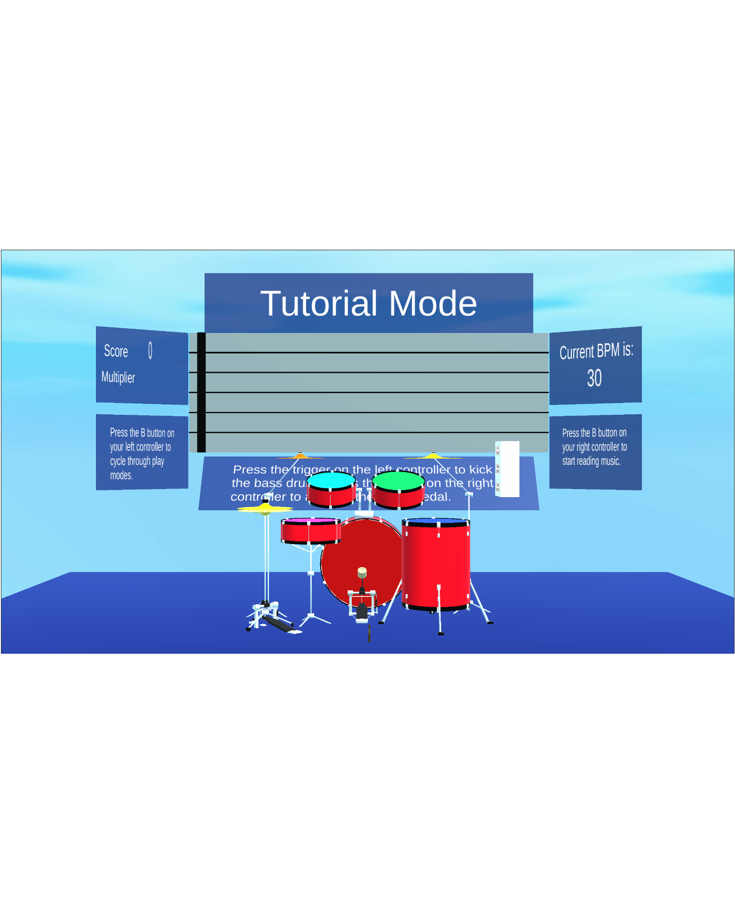

About Me
After spending several years in restaurant management and ultimately finding it unfulfilling, I decided it was time to switch to a career I could truly be passionate about. To that end, I re-enrolled in college and earned a bachelor's degree in computer science. Since graduating, I have continued my education by taking online courses which have helped me improve my familiarity with git and GitHub and helped me learn to use the advanced debugging features of my favorite IDE's. While I am proud of the programming proficiency I learned in school, and the grades I earned along the way, I believe the management experience and communication skills I honed in the service industry, combined with my natural aptitude for logical thinking and love of problem-solving, are what make me a desirable addition to any team.
Education
California State University, Northridge
Computer Science
Having completed my lower division courses at SMC, I was able to get into more advanced
classes at CSUN. The computer science degree path at CSUN exposed me to a diverse set
of programming languages including Prolog, Java, and Swift, but the languages I gained
the most proficiency with were Python, C#, and C.
GPA: 3.72, Dean's List
Santa Monica College
Computer Science
At SMC, I took lower division computer science and general education courses. I earned what they refer to as a
Certificate of Achievement in Computer Science and was able to transfer to Cal State, Northridge to complete my
bachelor's degree.
GPA: 3.56, Dean's Honor List
Current Projects
Of all the projects I was a part of during my time at CSUN, the two I am most proud of are the VR Drums and Kinetic Radiance. When my time at school having come to an end, these two are now personal projects that I continue to work on. A brief description of each project and a link to its website can be found below.
VR Drums
Current research overwhelmingly shows the benefits of music education for children. Unfortunately, music and arts are often the first things that get cut from the curriculum when a school district finds itself short on funding. The VR Drums project aims to create a cheap, portable, and quiet means of keeping music education in the classroom.

Kinetic Radiance
In recent years, the market for products that enourage mindfulness and relaxation has proven to be substantial. Adult coloring books, apps that offer guided meditation, and YouTube channels streaming videos of peaceful locales remain in high demand. Kinetic Radiance combines music and visually stunning effects in a virtual reality environment to offer the user an easily accessible escape from reality.

Skills
- I am an excellent communicator and enjoy explaining complex concepts. I am comfortable speaking in public and giving presentations.
- I pride myself on being a quick study, and I have a passion for learning new things.
- I am as comfortable managing large groups and giving direction as I am working with a team and following others' instructions.
- There is nothing I hate more than doing a thing poorly. I often spend my free time practicing skills or doing research so that I might perform better in school or on the job.
Programming Languages
- I find Python to be the language that feels the most natural in terms of transcribing the logic in my head to code on the screen. I always enjoy coding in Python and am comfortable using many of its common libraries, especially those used in machine learning applications.
- The majority of my senior projects in college were developed in Unity and written with C#. This is the language I have the most experience with and have loved learning how to code for AR and VR applications.
- Programming with C for embedded systems is one of my favorite types of projects, and I am currently enrolled in an online course to improve my skills in this area.
- I am also familiar, though not to the point of proficiency, with Prolog, Java, C++, and HTML.